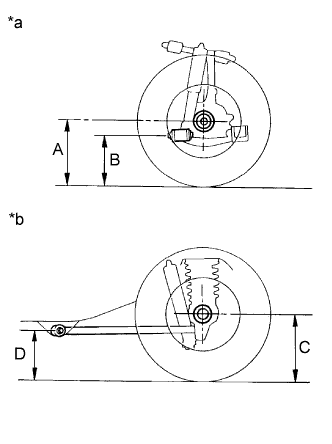

SUSPENSION CONTROL SYSTEM (w/ Air Suspension) > ON-VEHICLE INSPECTION |
| 1. INSPECT TIRES |
Check the tires for wear and proper inflation pressure.
| Vehicle Model | Tire Size | Front kPa (kgf/cm2, psi) | Rear kPa (kgf/cm2, psi) |
| URJ150L-GKTZKC | 265/60R18 110H | 220 (2.2, 32) | 220 (2.2, 32) |
| URJ150L-GKTZKV | 265/60R18 110H | 200 (2.0, 29) | 200 (2.0, 29) |
| URJ150L-GKTZKW | 265/60R18 110H | 200 (2.0, 29) | 200 (2.0, 29) |
Using a dial indicator, check the tire runout.
| 2. ADJUST STANDARD VEHICLE HEIGHT |
Release the parking brake and stabilize the suspension by bouncing the corners of the vehicle.
With the shift lever in N, settle the tires by moving the vehicle back and forth.
Start the engine.
Operate the height control switch to raise and then lower the vehicle height. Perform this operation twice.
| 3. INSPECT VEHICLE HEIGHT |
|  |
Press down on the vehicle several times to stabilize the suspension, and then measure the vehicle height.
| *a | Front Side |
| *b | Rear Side |
| Vehicle Model | Front (A - B) | Rear (C - D) |
| URJ150L-GKTZKC | 86.4 mm (3.40 in.) | 69.1 mm (2.72 in.) |
| URJ150L-GKTZKV | 86.7 mm (3.41 in.) | 69.2 mm (2.72 in.) |
| URJ150L-GKTZKW | 86.4 mm (3.40 in.) | 69.1 mm (2.72 in.) |
| 4. INSPECT VEHICLE HEIGHT SELECTION |
Start the engine.
Using the height control switch, check the vehicle height adjustment amount and vehicle height adjustment time for each vehicle height mode.
| Mode Transition | Operation Details | Vehicle Height Adjustment Time |
| N mode to HI mode | From when "up" on height control switch pressed and control begins to when vehicle height is adjusted to HI mode | Approximately 20 seconds |
| HI mode to N mode | From when "down" on height control switch pressed and control begins to when vehicle height is adjusted to N mode | Approximately 20 seconds |
| N mode to LO mode | From when "down" on height control switch pressed and control begins to when vehicle height is adjusted to LO mode | Approximately 20 seconds |
| LO mode to N mode | From when "up" on height control switch pressed and control begins to when vehicle height is adjusted to N mode | Approximately 20 seconds |
| 5. ADJUST VEHICLE HEIGHT |
Suspend vehicle height control by pressing the height control switch.
Put the vehicle on a level surface.
 |
Measure the vehicle height (C - D measurement) on the right side and left side.
If the actual vehicle height differs from the vehicle height (C - D measurement), adjust it by jacking up the frame, etc. (Procedure "A").
 |
If the procedure "A" differs from the vehicle height (C - D measurement), adjust it by following the procedures below.
Loosen the nut.
Move the height control sensor link up and down along the slotted hole of the bracket.
Adjust the vehicle height to the vehicle height (C - D measurement) while checking the value on the intelligent tester or voltmeter.
Tighten the nut.
If the vehicle height cannot be adjusted by performing procedure "A", adjust it again by following the procedures below.
Loosen the 2 lock nuts of the height control sensor link.
| *1 | Lock Nut |
Adjust the vehicle height to the vehicle height (C - D measurement) by turning the link while checking the value on the intelligent tester or the voltmeter.
Tighten the 2 lock nuts.
Check that the lengths of the screw parts, labeled "A" in the illustration, are within the standard values.
| Item | Specified Condition |
| LH | 6.0 to 12.5 mm (0.237 to 0.492 in.) |
| RH | 6.5 to 15.0 mm (0.256 to 0.590 in.) |
Change the vehicle height (from the normal position to the high position, and from the high position to the normal position).
Measure the vehicle height (C - D measurement) on the right and left side (Procedure "D").
Check if the vehicle height (C - D measurement) is within the specified range.